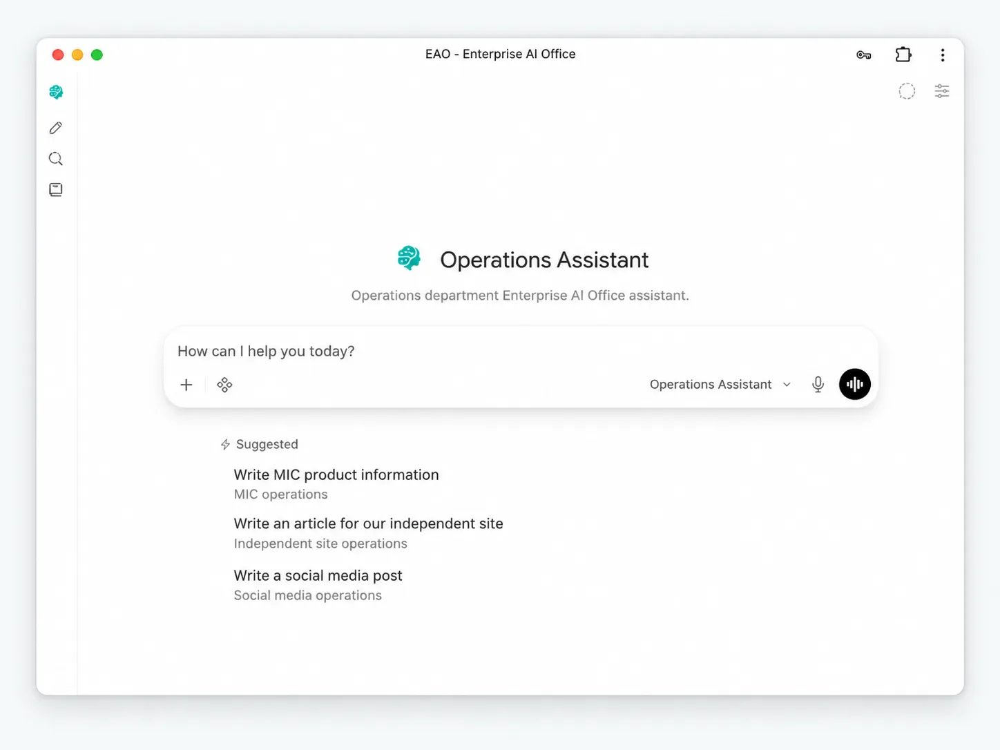

AI that understands your company.
EAO lets AI work with your company’s knowledge, files and tools in day-to-day work.

EAO brings company context and tools into day-to-day work.

Common chat-style AI workflow
the employee still prepares the company context- Employee finds product files and history
- Copy the relevant context into a chat
- Ask how to reply to the customer
- AI provides advice or a draft
- Employee keeps checking and assembling the final response
With EAO
work moves forward- Tell the Sales Assistant: “Prepare this customer reply”
- EAO checks approved product knowledge and files
- It looks up relevant history and, when needed, external information
- It organizes the facts and prepares a reply draft
- Sales reviews, judges and sends
What can different departments actually ask EAO to help finish?
People remain responsible for judgment, approval and formal external actions.

Sales
- Find product specifications and supporting files
- Look up prior quotations and similar cases
- Prepare customer reply drafts
- Research customers and markets
- Summarize sales data and working material
Procurement
- Organize BOMs and material information
- Retrieve historical purchasing context
- Research and compare suppliers
- Prepare cost comparisons
- Prepare RFQ and sourcing material
Finance
- Find authorized policies and finance files
- Work with spreadsheets
- Check, summarize and organize data
- Prepare reporting material
- Organize supporting explanations and records
Operations
- Research markets and competitors
- Organize product information
- Prepare website and social content
- Support B2B platform product and account operations
- Reuse recurring operating material and prior practice
Management
- Find authorized cross-department information
- Assemble operating and review material
- Compare options and background information
- Prepare meeting and management reports
- Summarize inputs needed for decisions
Company knowledge, files, history and tools come together in one work environment.

Company knowledge and files
Work can directly use approved product information, policies, documents and company files.
History and prior work
Relevant quotations, cases, records and prior work can be reused when the department is allowed to access them.
Research and calculations
Approved departments can combine external research with file, spreadsheet and deterministic data work.
Reusable department methods
Working methods learned from real department work can be reused in similar tasks later.
Useful working methods can be retained and reused in similar work later.
Stable, reusable working methods can continue to be used when they fit the department’s rules and access boundaries.

AI can enter the company without taking control away from the company.

Self-hosted system
The EAO application stack can run on infrastructure controlled by the organization.
Department boundaries
Different departments can have different knowledge, file and tool scopes.
Tools are explicitly approved
What an Assistant can do depends on the tools and permissions the organization makes available.
Key actions do not automatically overreach
Judgment, approval and formal external actions remain human responsibilities. Whether EAO can perform a specific operation depends on the tools and permissions the organization explicitly enables.
EAO runs and is continuously maintained in a real company environment.
ARMOR is the first EAO reference implementation. The current reference deployment covers real departments, company knowledge, NAS files, browser/PWA access and day-to-day operations, while reusable EAO components remain separate from company-private configuration and data.
How are these capabilities implemented in the current ARMOR reference deployment?
In the current ARMOR reference deployment, Hermes reasoning and WeKnora KnowledgeQA share a loopback EAO Model Gateway, while local Qwen services continue to handle lightweight embedding, reranking, vision and speech tasks.
Questions companies usually ask before bringing AI into daily work.
About EAO
How is EAO different from simply giving employees ChatGPT?
General AI products such as ChatGPT provide powerful models and broad AI capabilities. EAO addresses a different layer: how a company organizes its chosen models with departments, company knowledge, files, history, tools and permissions into a controlled work environment. EAO is not tied to one model and is not simply another chat window.
Is EAO only for answering questions?
No. Depending on the department and permissions, EAO can find company information, read files, research, compare, organize, calculate and prepare work products such as replies, reports and operating material. People remain responsible for judgment, approval and formal external actions.
Do employees need to understand what an AI Agent is?
No. Employees can use the work environment for their department directly.
How are department work environments separated?
Employees use the same EAO system, while each department can have its own knowledge, files, tools and access scope. The entry point can stay consistent even when the company context and permission boundaries behind it are different.
Is EAO a concept project or something already used in a real company?
EAO grew out of real company operations. ARMOR is the first reference implementation, while reusable EAO components remain separate from company-private configuration and data.
Already using Feishu / existing systems?
We already have a Feishu Bot. Do we still need EAO?
A Feishu Bot can be a useful interaction channel, but EAO addresses a broader problem: how AI works with departments, company knowledge, files, tools and permissions. The two can coexist rather than replace each other.
Will EAO replace Feishu?
No. Feishu can continue to handle communication, collaboration and business processes, while EAO adds an AI work layer on top of existing company assets.
Do we have to migrate our Feishu knowledge base and files into a new system?
Not necessarily. For supported data sources that have been configured, EAO can continue retrieving approved content from Feishu knowledge bases or cloud drives so the original system remains a source of truth. The available scope depends on the connection method and permission configuration.
Can we keep using NAS, shared drives, wikis and existing business systems?
Yes. EAO does not require a company to replace existing systems before adding AI. Whether EAO can directly read or act on data in a given system depends on the approved connector, tool and permission configuration available for that system.
Data, permissions and deployment
Will all company data be sent to an external AI provider?
That depends on the model providers and integrations the company chooses. The EAO application can be self-hosted, but self-hosting alone does not mean every model request automatically stays local.
Can different departments be kept inside different access boundaries?
Yes. Different departments can have different scopes for knowledge, files and tools; the actual boundary depends on the organization’s permission and integration configuration.
Do we have to use a local AI model?
No. EAO can use local models, external model services, or a mix. The current reference deployment uses a unified model access layer to separate applications from specific model providers, so changing the underlying model does not require redesigning each department work environment. Companies can choose according to capability, cost, latency and data-handling requirements.
Do we have to deploy everything at once?
No. A company can start with one department or one workflow and expand as needed.